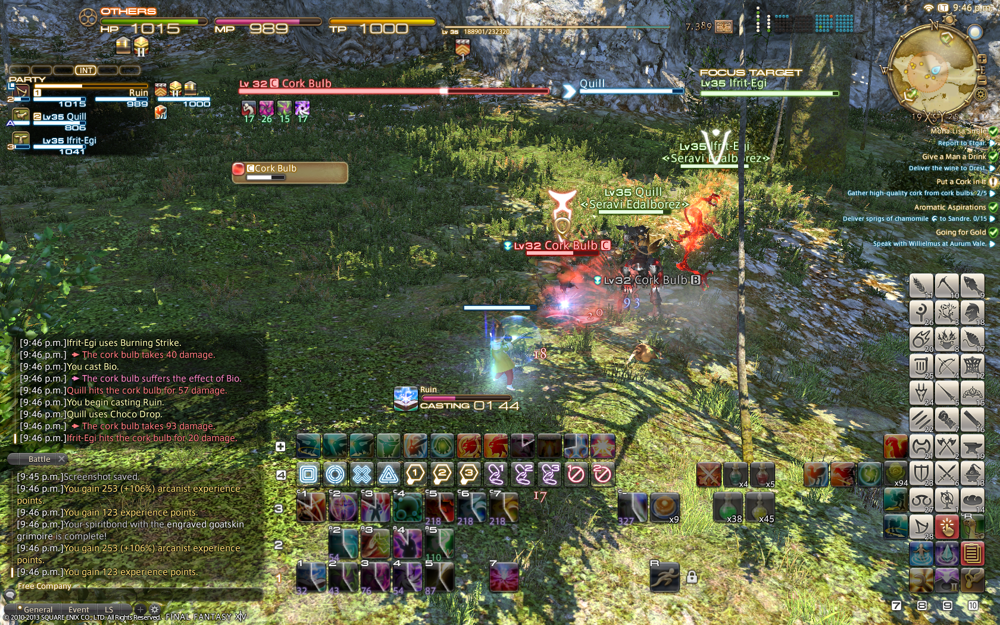

RANKED SECOND: FINAL FANTASY XIV

If there's any MMORPG that can give WoW a run for its money, it's the Final Fantasy franchise. An upgrade from FFXI, FFXIV is a completely different game than what it was when it was first released. Originally released in 2010, the game was met with heavy criticism and negative reviews due to its stale content, horrible server uptimes, and large amount of bugs and glitches, among other things. Under the direction of Naoki Yoshida, the game underwent a rebirth under a new expansion, released in 2013, and have since been hailed as one of the best MMORPGs in the world. With the Final Fantasy franchise under its belt, the game is able to pull content from its other series to keep a myriad of content updates available for its users. The customization available in the game from glamours, personal housing, and a unique crafting system is what allows the game to deserve its high praise from game critics and fans alike. Having its second expansion released in June 2017, the game is currently focused on mini-patches to slowly add more in-game content, as well as adding QoL updates that the community has long been asking for.
Details:
Release Year: 2010, then 2013
Payment Model: Subscription
Latest Expansion Date: June 2017
Next Expansion Date: Content Update, May 2018
Total Accounts Created: Over 20 Million
Current Active Playerbase: Around 1 Million in North America
Company: Square Enix
Release Year: 2010, then 2013
Payment Model: Subscription
Latest Expansion Date: June 2017
Next Expansion Date: Content Update, May 2018
Total Accounts Created: Over 20 Million
Current Active Playerbase: Around 1 Million in North America
Company: Square Enix

Rankings: